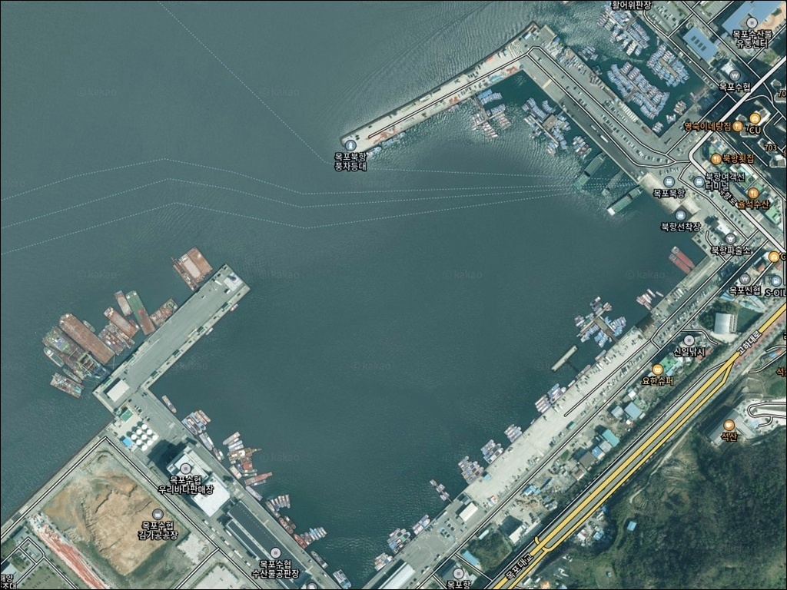
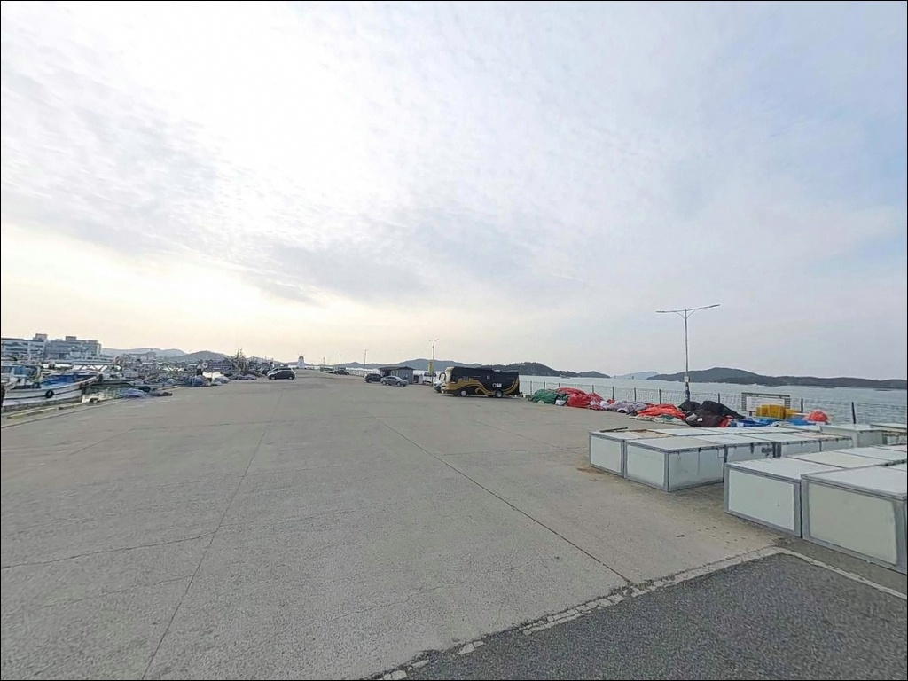
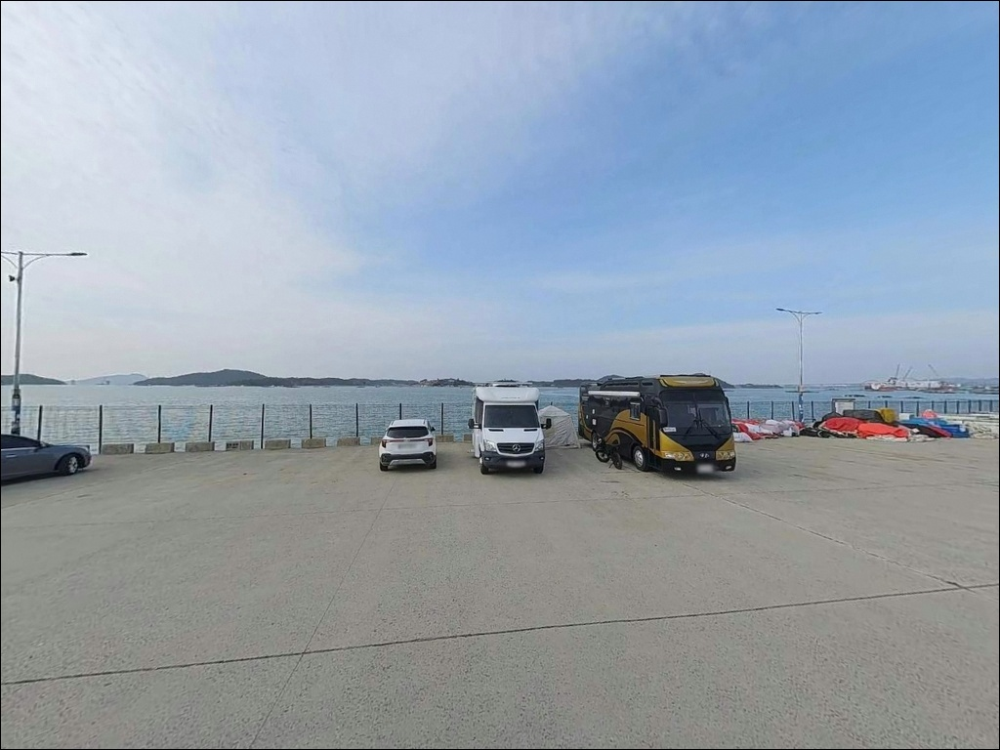
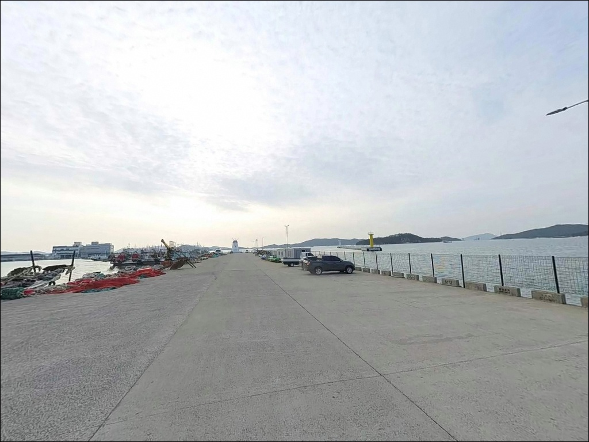
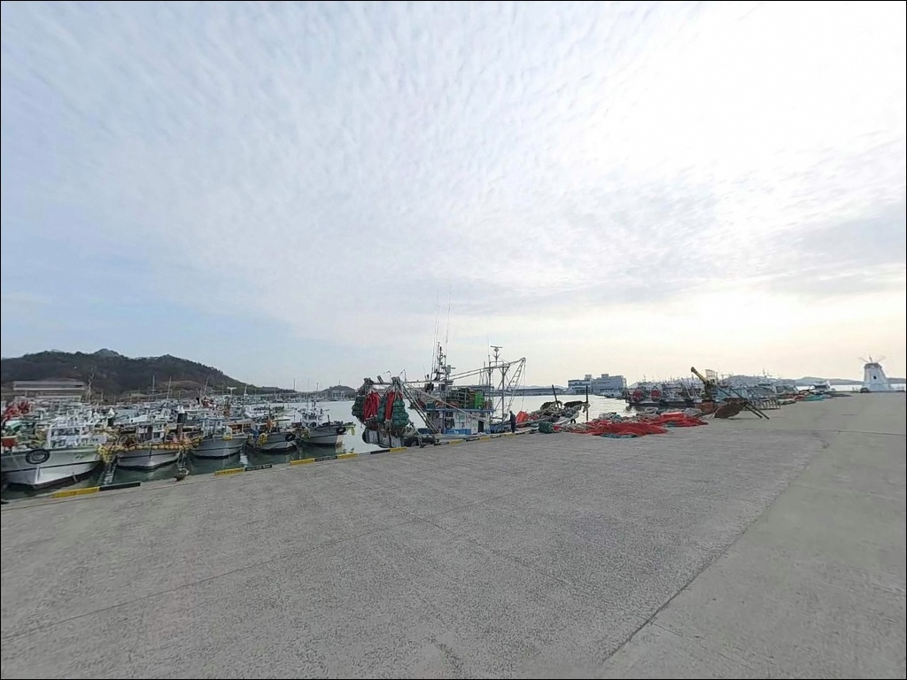
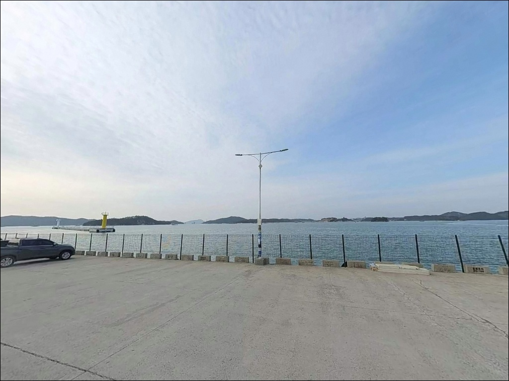
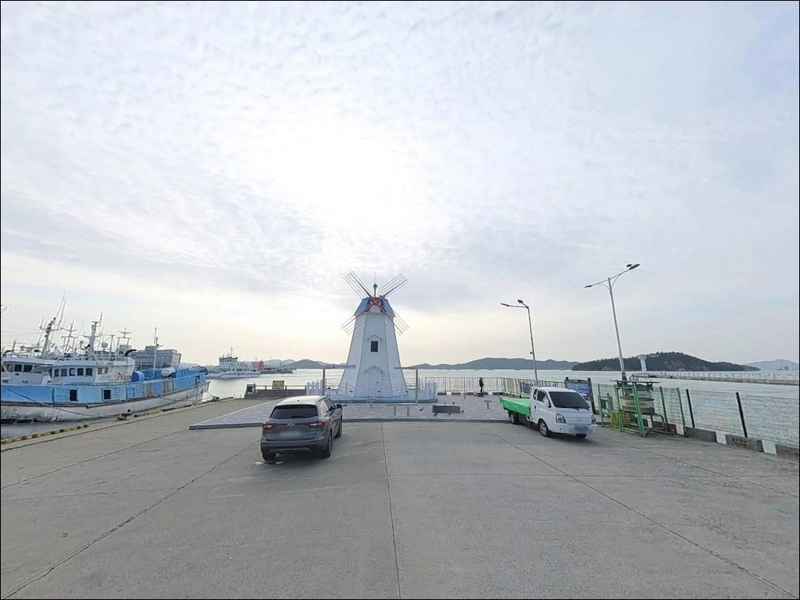
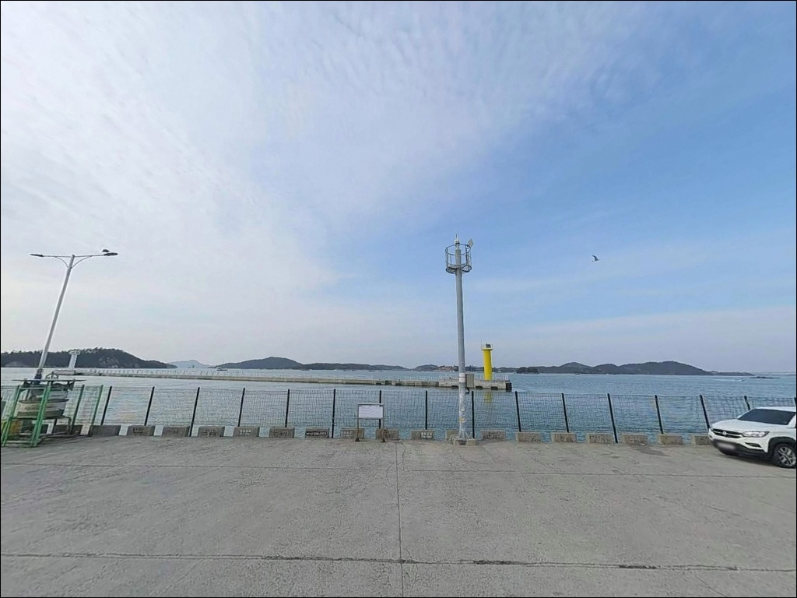
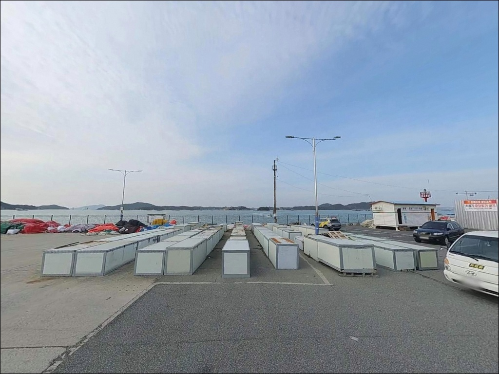

목포북항 ,전남 목포시 한적한 분위기 속 차박, 낚시를 함께 하기 좋은 곳
이 페이지에는 광고(제휴 링크 포함)가 있으며, 광고 링크를 통해 구매하면 운영자가 판매 수익 또는 수수료를 받을 수 있습니다. 포인트 사진: 카카오맵 스카이뷰·로드뷰. 이 페이지의 지도·사진 이미지는 카카오맵의 실제 서비스 이미지와 다를 수 있습니다.


포인트 안내
목포북항
전남 목포시 죽교동 620-320
어선 하역 동선과 낚시 가능 구간이
혼재해 있는 항만에서 자리를 무작정 잡으면,
작업 구역에 걸려 이동을 요구받는 상황이 생깁니다.
목포북항은 현역 수산물 전용 항만으로
물양장과 방파제 구조가 함께 갖춰진 곳이라,
방문 전 낚시 가능 구간과 주차 동선을 미리 파악해 두는 것이
출조 효율을 결정합니다.
이 글은 목포북항의 진입 동선,
낚시 지형 구조, 차박 여건,
낚시 스타일별 공략 조건에 집중합니다.
조황 단정이나 특정 어종 보장은
이 글의 범위에 포함되지 않습니다.

1. 포인트 위치 및 진입 동선 분석
목포북항은 목포 도심과 근접한 죽교동 일대에 위치합니다.
고하대로 방면에서 북항 방향으로 진입하는 구조로,
항만 접근 도로가 정비된 편이라
포장도로 진입이 수월합니다.
물양장과 선착장이 자리한 부두 일대는
공간이 넓어 대형 차량도
회차에 큰 어려움이 없는 구조입니다.
주차는 북항 활어회 어시장 인근 공터와
목포해상케이블카 북항 승강장 인근 주차장을
활용하는 방식이 일반적입니다.
어선 하역·작업 동선과 겹치는 구역에 주차하면
이동 요청을 받을 수 있으므로,
작업 동선을 벗어난 자리를 먼저 확인해야 합니다.
항만 건설 공사가 일부 구간에서 진행 중인 상태라,
출발 전 위성지도로 접근 가능 구역을
미리 파악해 두는 편이 현장에서 시간을 아낍니다.

2. 차박 환경 평가 및 야간 체류 여건
목포북항의 차박 여건은
조용한 힐링형보다 낚시 거점 활용형에
어울리는 구조입니다.
항만 특성상 어선 이동과 작업 차량 왕래가 이루어지고,
야간에도 완전한 정숙 환경을 기대하기는 어렵습니다.
프라이버시 면에서도
한적한 어촌 포인트와는 성격이 다릅니다.
야간 조명은 물양장 시설 조명이 설치된 구조라
밤낚시 시 시야 확보는 비교적 수월한 편입니다.
바람은 외해 방향으로 개방된 구간에서
영향을 받을 수 있으므로,
바람이 강한 날은 차량 방향을 조정하는 방식이 필요합니다.
낚시를 마치고 짧게 머무는
베이스캠프형 활용이라면
접근성과 조명 환경이 도움이 됩니다.


3. 주변 편의시설 및 인프라 현황
목포북항은 도심과 근접한 위치 덕분에
편의시설 여건이 좋은 편입니다.
반경 3km 이내에 목포 시내권이 위치해
편의점·마트·식당이 풍부하게 분포해 있어,
출발 전 물자 준비를 다 못 했더라도
현장 인근에서 보충이 가능한 조건입니다.
항구 바로 옆에는 북항 활어회 어시장이 자리하고 있어
낚시 후 신선한 수산물 구매나 식사 해결이 수월합니다.
목포해상케이블카 북항 승강장과 노을공원이 인접해
동행자와 관광 동선을 함께 구성하기에도
편리한 위치입니다.
비금도·도초도행 여객선 선착장도
북항 내에 위치해 주변 섬으로 이동하는 기점으로
함께 활용할 수 있습니다.

4. 방문 전 반드시 챙겨야 할 준비사항
목포북항 방문 전에 가장 먼저 확인할 것은
물때입니다.
바다타임에서 목포북항 기준 물때표를 확인하고,
조류가 잘 흐르는 타이밍에 맞춰
출발 시각을 정하는 것이 기본 전략입니다.
사리 전후 조류가 세지는 구간에서는
채비 컨트롤이 어려울 수 있으므로
조금 전후 타이밍을 우선으로 고려합니다.
항만 건설 공사가 일부 구간에서 진행 중인 상태라,
안전 펜스나 출입 제한 표시가 있는 구간은
진입 전에 반드시 확인해야 합니다.
방파제와 물양장 구간은 바닥이 젖어 있거나
로프·어구가 걸려 있는 경우가 있으므로,
야간 낚시 시에는
미끄럼 방지 신발과 헤드랜턴을 반드시 챙겨야 합니다.
구명조끼는 낚시 중 필수 착용 대상입니다.
어선 하역·작업이 주로 이루어지는
새벽~오전 시간대에는
물양장 접안 구역 접근을 자제하는 것이 기본 매너입니다.
출조 전 최신 조황은
"목포북항 조황" 또는 "목포 방파제 낚시"로
검색해 미리 확인하시기 바랍니다.

5. 외항과 내항이 갈리는 지형 — 낚시 여건 분석
목포북항의 낚시 지형은
크게 내항 물양장 구간과 외항 방파제 구간으로 나뉩니다.
물양장이 길게 조성된 내항 구간은
직벽형 발판 구조로 수심이 일정하게 깊은 편입니다.
직벽 앞으로 채비를 내리거나 멀리 던지는 방식 모두
적용이 가능한 지형입니다.
방파제 끝단으로 갈수록
조류 영향을 직접 받는 구간이 나타나며,
수심도 급변하는 경향이 있습니다.
이 구간은 바닥 어종과 회유성 어종 모두
기대해 볼 수 있는 자리입니다.
단, 방파제 및 부두 일부 구간은
실족 위험이 있는 구간으로 지정 안내된 이력이 있어
발판 상태와 주변 환경을 반드시 확인해야 합니다.
목포북항은 직벽형 물양장과 방파제 구조를 갖춰
원투낚시와 루어낚시 모두 진입 가능한
도심형 복합 낚시 포인트입니다.
항만 구조물 주변으로 어류가 붙기 좋은 환경이 형성되어 있고,
내항 안쪽의 정온 수역부터
외항 방향의 조류 흐름 구간까지
다양한 낚시 여건이 혼재합니다.
출조 전 최신 조황은
"목포북항 조황"으로 검색해 반드시 확인하시기 바랍니다.


6. 포인트에 어울리는 낚시 스타일
원투낚시는 이 포인트에서 가장 기본이 되는 방식입니다.
물양장 직벽 앞 수심이 일정하게 나오는 구간에서
무거운 봉돌을 달아 바닥층을 공략하면
붕장어·도다리·노래미 계열을 기대할 수 있습니다.
조류가 느려지는 정조 타이밍에
채비를 멀리 보내 바닥을 탐색하는 방식이
이 포인트 구조와 잘 맞습니다.
루어낚시는 방파제 외항 측과
항 입구 조류 구간에서 어울리는 스타일입니다.
지그헤드 웜 채비로 구조물 주변 바닥층을 더듬거나,
미노우 플러그로 항 입구 수면층을 공략하는 방식이
이 포인트 지형 구조와 맞습니다.
조류가 살아 있는 항 입구 구간에서는
농어·감성돔·숭어 계열이
활성화될 가능성이 있습니다.
찌낚시는 내항 정온 수역에서 적합한 방식입니다.
조류가 완만한 내항 특성상 고정찌 방식으로
중층을 탐색하면
감성돔·학공치 계열을 노릴 수 있는 조건이 갖춰져 있습니다.
야간에는 조명이 밝은 물양장 구간에서
갑오징어 에깅이나 소형 루어 채비를 활용한 방식도
이 포인트 야간 환경에 어울립니다.
가을(8~11월)은 목포 전역에서 갈치 시즌이 활성화되는 시기로,
북항에서 출조하는 선상낚시 선단도
이 시기에 집중됩니다.

7. 대안 포인트와 플랜 B 동선
목포북항 자리가 여의치 않거나
항만 공사 구간 접근이 제한될 때
가장 가까운 대안은
유달유원지 낚시 포인트입니다.
유달산 아래 해안 산책로와 바다가 만나는 구간으로,
북항에서 차량으로 5분 내외 거리에 위치합니다.
조용한 환경에서 도보 낚시를 원할 때
현실적인 대안이 됩니다.
고하도 선착장은
목포해상케이블카 또는 도선으로 접근할 수 있는
섬 선착장 포인트입니다.
북항보다 한적한 분위기의 낚시 환경을 원한다면
고하도 방향이 현실적인 선택지입니다.
갯바위 주변에서 볼락·노래미 계열을
노려볼 수 있는 구조입니다.
가을 갈치 시즌에는
목포 평화광장 앞 일대가
선상낚시 출조 중심지가 됩니다.
갈치 선상 출조를 메인으로 생각한다면
북항보다 평화광장 출항 동선을 먼저 확인하는 편이
효율적입니다.
목포 남항도 방파제 낚시와 선상낚시를
병행할 수 있는 대안 포인트입니다.

도심에서 가장 가까운 방파제 낚시,
목포북항이 맞는 낚시인
내만형 수역의 원투낚시와 루어낚시를
도심에서 출퇴근하듯 즐기고 싶은 낚시인에게
목포북항은 잘 맞는 포인트입니다.
접근성이 뛰어나고 편의시설 여건도 좋아
첫 방문 부담이 낮고,
복수의 낚시 방식을 한 포인트에서
시도해 볼 수 있는 구조입니다.
반면 조용한 야박형 차박 환경이나
오지 포인트 감성을 원하는 낚시인에게는
맞지 않는 성격입니다.
항만 공사 구간이 남아 있는 구역이 있으므로,
진입 전 접근 가능 구간 확인이 방문 효율을 결정합니다.
항만 공사 진행 구간과 어선 작업 동선을
미리 파악하고 들어간다면
불필요한 이동 없이 낚시에 집중할 수 있습니다.
낚시를 마치고 인근 활어회 어시장에서 한 끼를 해결하고,
차에서 조용히 하룻밤 머무는 방식이
이 포인트에 가장 어울리는 출조 패턴입니다.